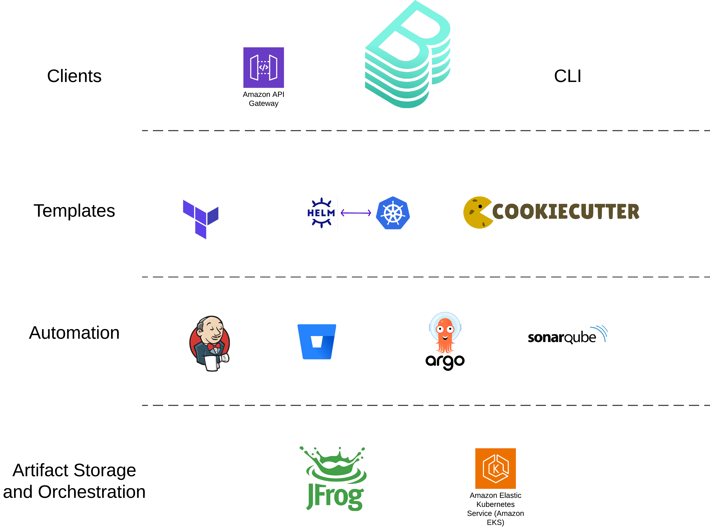

The Buzz About Platform Engineering
The Buzz About Platform Engineering
Insights from AWS re:Invent 2024
Platform Engineering: Balancing Autonomy and Standardization
Platform Engineering teams provide standardized templates and tools, enabling teams to self-service while maintaining autonomy. This approach addresses the challenge of balancing standardization with team independence.
Evolution to Platform Engineering
The shift-left movement introduced Agile and DevOps, promoting rapid product delivery.
.png)
.png)
.png)
Blueprints
Blueprints
Standardized templates of IAC with Project Boilerplate & Pipelines
Blueprints
Standardized templates of IAC with Project Boilerplate & Pipelines
The Vision for the Future
- Continuous Improvement
- Reduces Developer Load
- Easier Onboarding
- Faster Time to Market
HelloFresh Refreshing their Data Game
Utilizing Backstage -- Tardis -- for a Unified Data Platform
Creation of EMR Spark Job, Glue Table, & the BI data viz in Quicksight
All reviewable by PR! #GitOps

Toyota Elevating the Developer Experience
Utilizing Backstage -- Chofer


Scenario Time
Flight booking software
Integrating with AWS SDK
Cloud Services at your fingertips
package main
import (
"context"
"fmt"
"log"
"github.com/aws/aws-sdk-go-v2/aws"
"github.com/aws/aws-sdk-go-v2/config"
"github.com/aws/aws-sdk-go-v2/service/eventbridge"
"github.com/aws/aws-sdk-go-v2/service/eventbridge/types"
)
func main() {
// Load the AWS default configuration
cfg, err := config.LoadDefaultConfig(context.TODO(), config.WithRegion("us-east-1"))
if err != nil {
log.Fatalf("unable to load SDK config, %v", err)
}
// Create a new EventBridge client
client := eventbridge.NewFromConfig(cfg)
// Define the event details
event := types.PutEventsRequestEntry{
Source: aws.String("my.custom.source"),
DetailType: aws.String("CustomEvent"),
Detail: aws.String(`{"user": "Duo owl", "city": "Valencia", "country": "Spain"}`),
EventBusName: aws.String("default"), // Change to your custom event bus name if not using default
}
// Put the event into EventBridge
output, err := client.PutEvents(context.TODO(), &eventbridge.PutEventsInput{
Entries: []types.PutEventsRequestEntry{event},
})
if err != nil {
log.Fatalf("failed to send event to EventBridge, %v", err)
}
// Log the result
for _, result := range output.Entries {
if result.EventId != nil {
fmt.Printf("Successfully sent event with ID: %s\n", *result.EventId)
} else if result.ErrorMessage != nil {
fmt.Printf("Failed to send event: %s\n", *result.ErrorMessage)
}
}
}
Feature Flags with Open Feature SDK
import { OpenFeature } from '@openfeature/js-sdk';
const client = OpenFeature.getClient();
const user = getUserFromEvent();
// Evaluate feature flag
const newFeatureEnabled = await client.getBooleanValue(
"city_info_flag",
false, // Default value
{
userId: user, // Contextual targeting
}
);
if (newFeatureEnabled) {
console.log("New feature is enabled!");
enableNewTripAdviceFeature();
} else {
console.log("New feature is disabled.");
}
Generative Artificial Intelligence
Augmenting Buisiness Capabilities
Foundation Models with Bedrock
Knowledge Bases for Amazon Bedrock automates the complete RAG workflow, including ingestion, retrieval, prompt augmentation, and citations, removing the need for you to write custom code to integrate data sources and manage queries.
package main
import (
"context"
"encoding/json"
"fmt"
"log"
"github.com/aws/aws-lambda-go/lambda"
"github.com/aws/aws-sdk-go-v2/aws"
"github.com/aws/aws-sdk-go-v2/config"
"github.com/aws/aws-sdk-go-v2/service/bedrockruntime"
)
type Request struct {
City string `json:"city"`
}
type Response struct {
Message string `json:"message"`
}
func handleRequest(ctx context.Context, req Request) (Response, error) {
if req.City == "" {
return Response{Message: "Please provide a city name."}, nil
}
// Load AWS config
cfg, err := config.LoadDefaultConfig(ctx)
if err != nil {
log.Fatalf("unable to load SDK config: %v", err)
}
// Create Bedrock Runtime client
client := bedrockruntime.NewFromConfig(cfg)
// Define the prompt for Claude
query := fmt.Sprintf("I am visiting %s as a tourist. What are the top things to do there?", req.City)
// Construct payload for Claude Sonnet
payload, err := json.Marshal(map[string]interface{}{
"messages": []map[string]string{
{"role": "user", "content": query},
},
"max_tokens": 512,
"temperature": 0.7,
})
if err != nil {
log.Fatalf("failed to marshal input: %v", err)
}
// Invoke Claude Sonnet on Bedrock
output, err := client.InvokeModel(ctx, &bedrockruntime.InvokeModelInput{
ModelId: aws.String("anthropic.claude-3-sonnet-20240229-v1"),
ContentType: aws.String("application/json"),
Body: payload,
})
if err != nil {
log.Fatalf("failed to invoke model: %v", err)
}
// Parse the response
var responseData map[string]interface{}
if err := json.Unmarshal(output.Body, &responseData); err != nil {
log.Fatalf("failed to parse model response: %v", err)
}
// Extract Claude’s response content
var responseText string
if choices, ok := responseData["content"].([]interface{}); ok && len(choices) > 0 {
if text, valid := choices[0].(string); valid {
responseText = text
}
}
if responseText == "" {
responseText = "I'm sorry, I couldn't generate recommendations for that city."
}
return Response{Message: responseText}, nil
func main() {
lambda.Start(handleRequest)
}
Conclusion
Embracing Generative AI and Platform Engineering can drive innovation and efficiency. Understanding and implementing these trends are crucial for staying competitive in the evolving tech landscape.